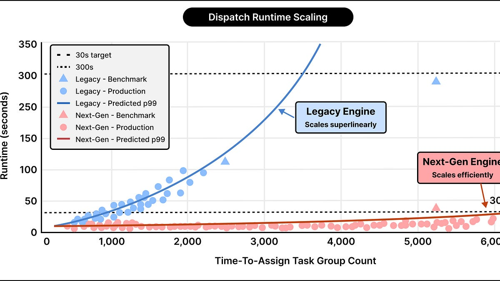
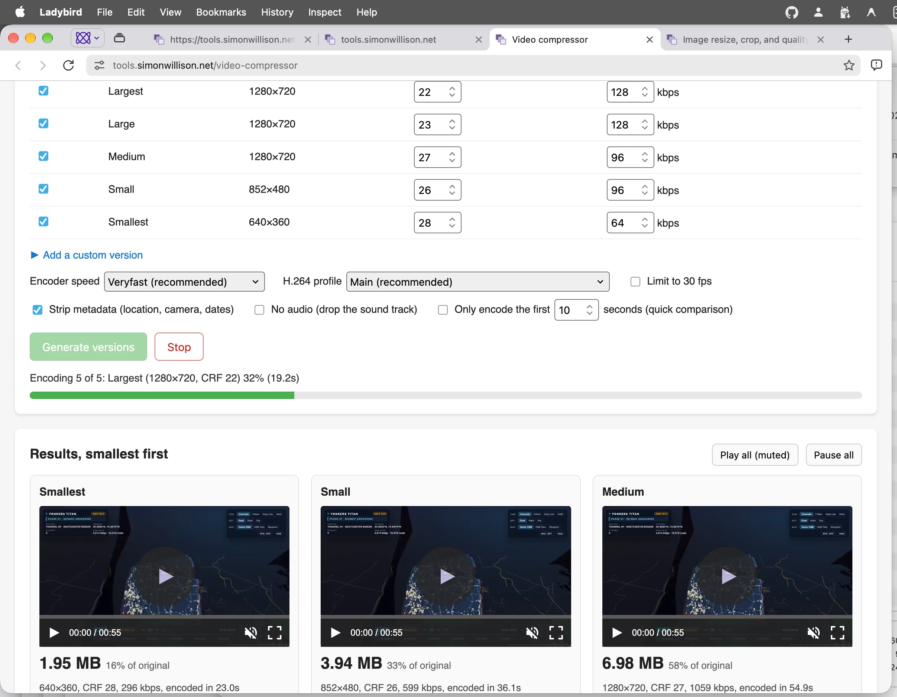
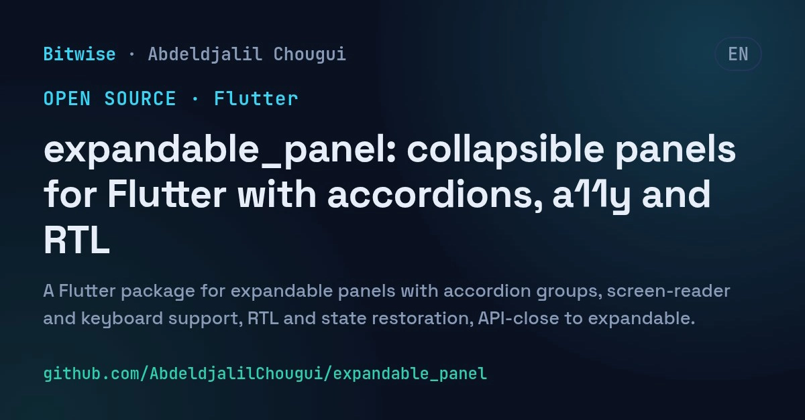
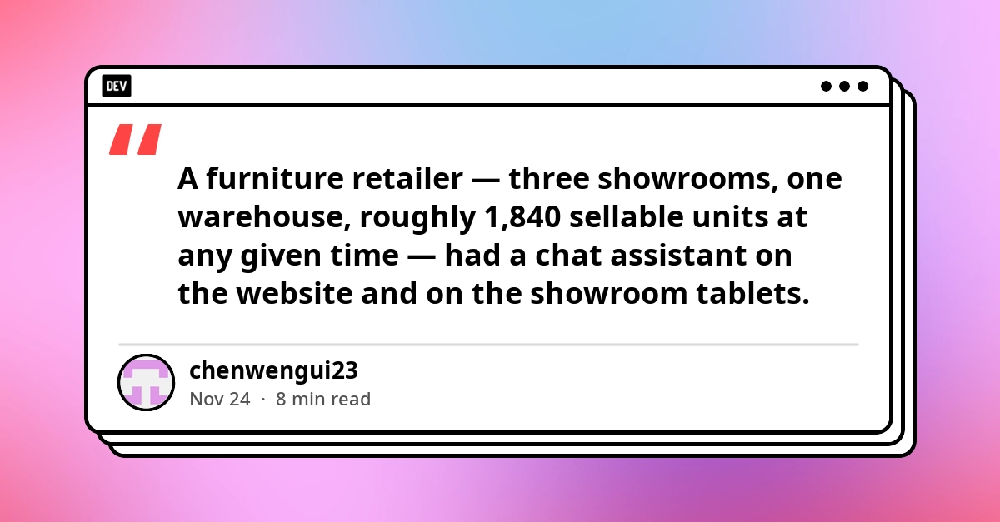
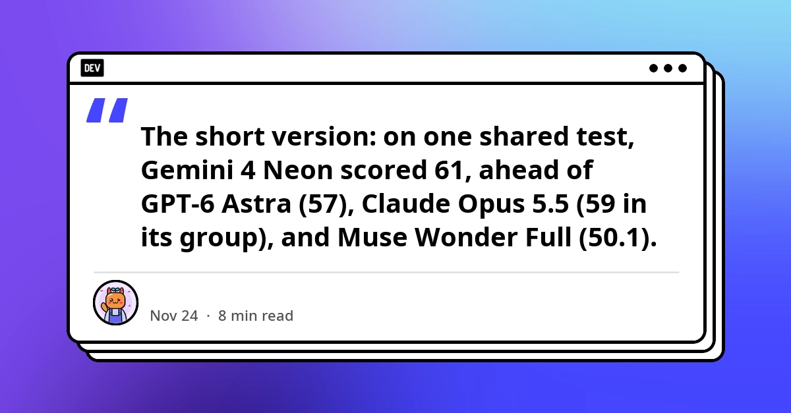
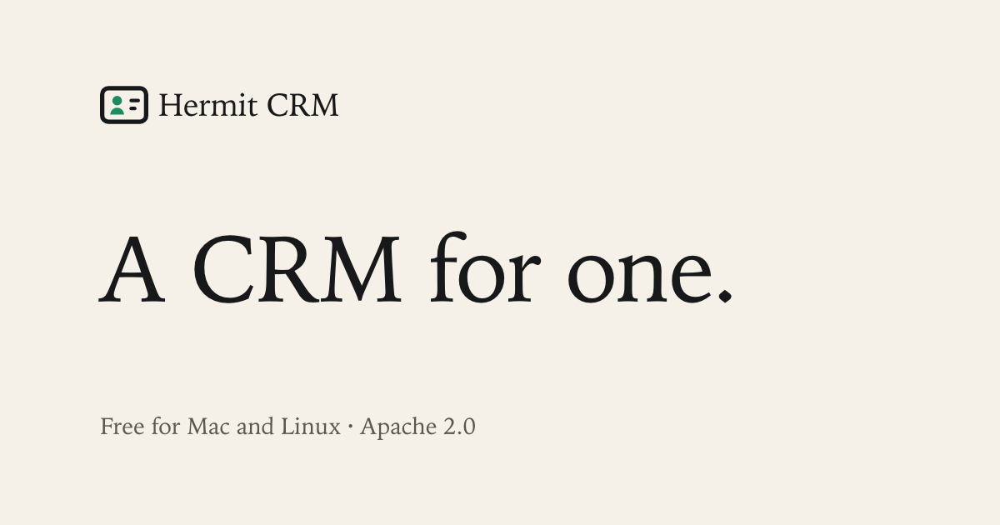

🔥 Top 3 (must read)
Kubernetes v1.38 Sneak Peek
The Kubernetes release team lists the planned changes for v1.38 before it ships. These include features that will be deprecated, removed, or replaced. Some of them can break your setup. Why it matters: If you run services on Kubernetes, read this before you upgrade so your cluster and manifests do not break.
K
DoorDash Dispatch: Building a Lightning-Fast Delivery System
ByteByteGo explains how DoorDash built Dispatch, its system that sends each delivery to a driver. It is a real case study of building a fast system at scale. Why it matters: It is a clear system design story you can learn from or share with your team in a design review.

GLM-5.4: Toward Generalized Coding with Our First Loop Transformer
(HN discussion, Simon Willison's notes) Z.ai released GLM-5.4, a coding-focused model and its first one built on a "loop transformer". In this design, a group of layers runs several times in a row, and each pass improves the result of the one before. The post got 1,075 points on HN. Why it matters: It is a new choice for coding agents and tools. Big discussions like this on HN often mean the model is worth a quick test.

🛠 Tools & releases
Ladybird's first alpha release
: Ladybird is a new browser with its own HTML parser, CSS engine, layout, JavaScript engine, and WebAssembly. It is now in alpha. It may become one more engine to test your web apps against.

expandable_panel for Flutter
: A Flutter package for collapsible panels. It supports accordion mode (only one panel open at a time), screen readers, right-to-left layouts, scrolling into view, and keeping its open/closed state after Android restores the app.

🤖 AI for developers
Your AI froze 611 sellable units and never told inventory
: A real case where a retail chat assistant said yes to "hold this item for me" but never updated the inventory system. It is a good warning for anyone who connects AI agents to business systems with side effects.

Gemini Took the Crown, But No AI Model Wins Everything
: A comparison of the current top models. It argues that Claude still wins for daily coding work. It ends with five Claude Code habits and prompts you can copy.

👔 Engineering & teams
Ship It Conversations: Terraliths, Terragrunt, and AI agents for IaC
: Matt Gowie (Masterpoint) talks about messy infrastructure. He explains why a "Terralith" (one huge Terraform state file) is the most common pain point, why he thinks Terragrunt is outdated, and where AI agents really help with infrastructure as code.
R
🎯 For me
Kubernetes v1.38 changes and the DoorDash Dispatch case study (see Top 3) match your interest in infra and system design most closely.
expandable_panel is directly useful for your Flutter apps. The a11y (accessibility) and state-restore parts are details teams often miss.
The AI sofa-hold story is a good example to bring to your team when you discuss where AI agents may change real data.
💡 App ideas & indie builds
Hermit CRM
(HN): A free, open-source CRM for solo founders. Problem: Most CRMs are built for sales teams and are too heavy and too costly for one person who just needs to track contacts and deals. Inspiration: Take a big "team" tool and make a small, free version for one person. This pattern works in many domains.

🎓 Try this
Open the Kubernetes v1.38 Sneak Peek and compare each deprecated or removed feature with your current manifests and Helm charts, for example with
grep in your deploy repo. If you find something that will break, you can make a ticket now, before the upgrade forces it.